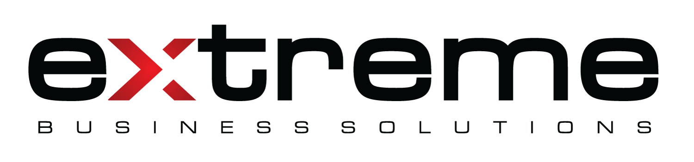

Hoş geldiniz
Hesap girişi
Beni hatırla
Bu cihazda oturum açık kalır. Ortak kullanılan cihazlarda kapatın.
Giriş
Güvenli kurumsal kimlik doğrulama

Hesap girişi
Bu cihazda oturum açık kalır. Ortak kullanılan cihazlarda kapatın.
Güvenli kurumsal kimlik doğrulama